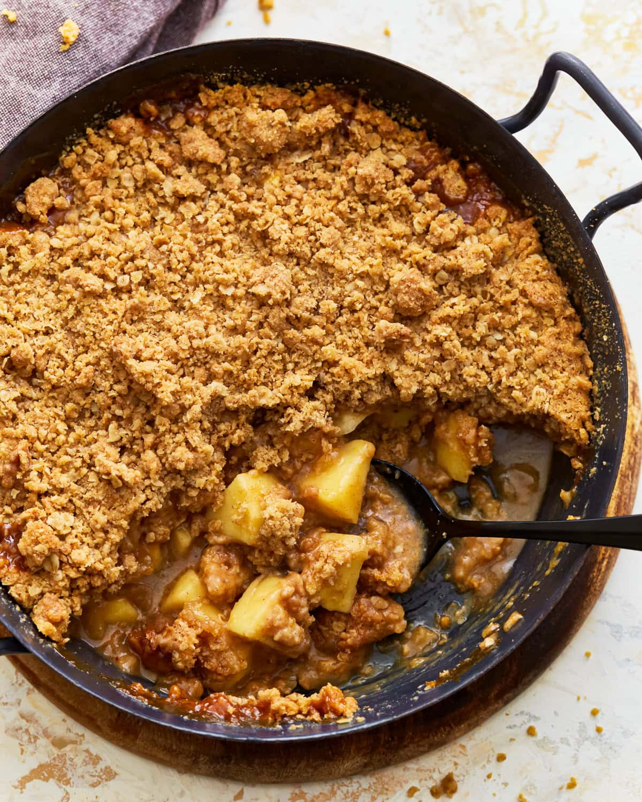

Gluten Free Apple Crisp
Gluten-Free Apple Crisp

Gluten-Free Apple Crisp Recipe
Ingredients
Topping
- ▢ 1/2 cup gluten-free all-purpose flour with xanthan gum, I like Pillsbury gluten-free flour
- ▢ 1/2 cup gluten-free quick oats
- ▢ 1/2 cup light brown sugar, packed
- ▢ 1/2 teaspoon gluten-free baking powder
- ▢ 1/4 teaspoon ground cinnamon
- ▢ 1/8 teaspoon salt
- ▢ 1/3 cup butter, diced into small cubes and softened, Dairy-free/vegan use Smart Balance butter.
Filling
- ▢ 4 cups apples, peeled and chopped
- ▢ 3 tablespoons melted butter, Dairy-free/vegan use Smart Balance butter
- ▢ 2 tablespoons gluten-free all-purpose flour with xanthan gum
- ▢ 1 tablespoon lemon juice
- ▢ 3 tablespoons milk, Dairy-free/vegan use unsweetened almond milk.
- ▢ 1 teaspoon pure vanilla extract
- ▢ 1/4 cup light brown sugar, packed
- ▢ 1/2 teaspoon ground cinnamon
- ▢ 1/8 teaspoon salt
Instructions
- Preheat oven to 375°F and spray an 8" x 8" baking dish with gluten-free nonstick cooking spray. I like
gluten-free coconut oil spray.
- To make the topping: In a medium-size bowl, combine the crumb topping ingredients and mix with a fork
until it resembles chunky crumbs. Refrigerate while you prepare the apple filling.
- Add the peeled and chopped apples to a large bowl. Add the lemon juice, milk, melted butter, pure
vanilla extract, packed brown sugar, ground cinnamon, gluten-free flour, and salt and stir until fully
combined.
- Pour the apple mixture into a greased baking dish and spread in to an even layer. Sprinkle crumb topping
evenly over the apples. Bake for 30–35 minutes or until golden brown. Remove from the oven and cool for
5-10 minutes before serving.
- Store in an air-tight container and refrigerate leftovers for up to 3 days. The apple crisp can be
frozen for up to 3 months. Thaw in the refrigerator overnight and reheat in a microwave or a 350°F oven
for 20 minutes.